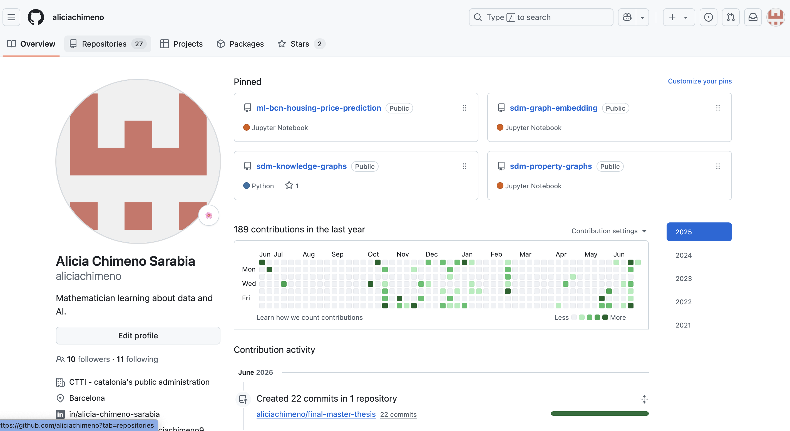

Why I Want to Join CERN
This section will show you why I should join you at CERN.My Skills
Good knowledge in Data Science
I hold a degree in Mathematics and a Master’s degree in Data Science, funded by the Allianz Technology Master Scholarship, an award recognizing academic excellence, leadership potential, and thought leadership in innovative AI discussions. Additionally, I bring nearly 2 years of experience as a Data Scientist within the Catalan public administration.
Fast learner

Learning is my superpower. When I'm passionate about a topic, I devour books, write essays, and even create mini podcast episodes talking about it. Right now, I'm building a digital garden, is a graph that connects all my essays and insights into a living network of ideas.
Clear Written
Words are one of humanity’s most incredible discoveries. I love reflecting on the most complex concepts in the universe and trying to uncover the core idea that can make even someone completely unfamiliar with the topic stop and think.
Organized
Organization is more than a habit for me, is an obssession. Daily planning, weekly scheduling, time-blocking, Notion, Calendar, Written planning, to do lists. I have try it all to keep me organized. Also I was the creator of my ex-companys notion project managment !! You could call me a mathematician because I chronometrize my days down to the minute. Sometimes chaos can take over, but never in my Apple calendar.
Knowledge in Tools
Experience with writing and collaboration tools including Google Docs, Sheets, GitHub, Teams, and Meet. Highly proficient in editing Markdown and HTML, as well as updating web pages. Check out my GitHub to explore my Data Science projects!
Languages

My passion for socializing and meeting new people has motivated me to study several languages. I have certificates in German (A2), French (A2), English (C1), as well as Spanish and Catalan. Moving to Geneva would be the perfect opportunity to relearn French!
My motivation to join CERN
Ever since I was little, I’ve been deeply fascinated by science. I vividly remember being called “nerd” plenty of times because of how enthusiastically I engaged with physics and maths classes. Honestly, I can’t blame my classmates. After all, it’s not exactly considered cool for a 12-year-old girl to bring up the Big Bang during lunch break.
For a while, that sense of being different left me feeling isolated. But over time, I realized that what set me apart was actually my greatest strength. For the first time, I felt a genuine sense of identity, math was my thing, and I was ready to embrace it.
In high school, my classmates started coming to me for help with challenging physics and math concepts, and I discovered that my passion wasn’t just for learning, it was for sharing knowledge, too. By the time I was 18, that same curious girl who once loved reading about black holes was embarking on a passionate journey to understand the world through the language of mathematics.
My passion for scientific innovation naturally led me to study Data Science and Artificial Intelligence. After almost two years immersed in the world of AI, I’ve come to realize the enormous impact it’s having on society, the good and the bad. The curious girl who once wanted to understand how we became who we are now has evolved into someone driven to explore who we will become.
While I work in AI, I remain deeply aware of its social and ethical implications. This is why I am committed to responsible AI research, ensuring that this inevitable explosion of knowledge unfolds in a way that benefits humanity as a whole.
I have reached a point in my life where I want to fully embrace my passion and dedicate myself to what truly ignites my curiosity. I place great importance on the social impact of my work and am deliberate about choosing collaborators who share these values.
For me, working at CERN would be a powerful source of inspiration, strengthening my commitment to becoming a role model for young women in science. CERN’s dedication to advancing science for positive social impact deeply resonates with my own values. I am eager to bring my mathematical expertise, strong critical thinking, and genuine passion for making the world better through science to CERN.
My role
CERN WEB
Here is my CERN web course prototype. I would like to enhance the website to make the courses more engaging and create dedicated articles for each course to promote future partnerships effectively. I could improve it much more!!!
Visit the Official CERN Website